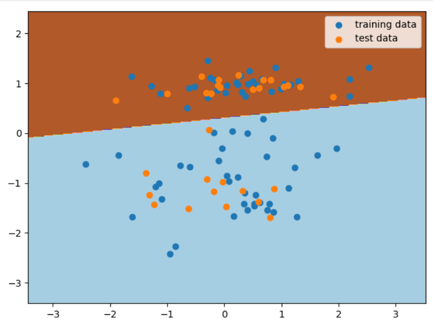

楼+机器学习前置课程 scikit-learn 机器学习基础课程 实验1、2笔记
入门介绍 监督学习 的目标是从已知训练数据中学习一个预测模型，使得这个模型对于其他输入数据产生一个预测输出。其中，监督学习的「监督」是相对与「非监督」的一种表达，二者的区别在于， 监督学习的训练数据经过了人工进行标注，而非监督学习则没有这个过程 。
监督学习分类：
分类：输出为有限个离散变量，布尔值或者定类变量。（人的性别）
归回：输出为连续变量，一般为实数，也就是一个确切值。（人的年龄）
提供给 非监督学习 的数据并没有人工标注，类聚。
scikit-learn 封装了大量复杂的算法，例如：线性回归、支持向量机、k 近邻、决策树、朴素贝叶斯、逻辑回归等。scikit-learn 还提供了围绕机器学习核心算法的一套工具，包括数据预处理，模型评估，超参数优化等。
代码风格
调用一个机器学习方法 构建 相应的模型 model，并设置模型参数。
使用该机器学习模型提供的 model.fit() 方法 训练 模型。
使用该机器学习模型提供的 model.predict() 方法用于 预测 。
scikit-learn 由 sklearn.linear_model 模块导入。线性模型：
线性回归模型 通过如下的拟合函数完成 样本分类 或 回归预测
$$\mathrm{y}(\mathrm{w}, \mathrm{x}) = w_{0} + w_{1} \cdot x_{1} + \cdots + w_{p} \cdot x_{p}$$
最小二乘法 sklearn.linear_model.LinearRegression()
基础实战 第一步：生成模型
1 2 3 4 5 import warningfrom sklearn.linear_model import LinearRegressionmodel = LinearRegression() model
输出如下
1 LinearRegression(copy_X=True , fit_intercept=True , n_jobs=None , normalize=False )
第二步：训练模型
使用 fit 方法去拟合3个点，三个点的 特征向量 分别为 $[0, 0]$、$[1, 1]$、$[2, 2]$，对应的目标值为 $[1, 2, 3]$
1 model.fit([[0 , 0 ], [1 , 1 ], [2 , 2 ]], [1 , 2 , 3 ])
可以通过如下方法查看拟合直线 ww项 和 常数项值
1 2 3 4 model.coef_ model.intercept_
所以可以看出，拟合函数为
$$\mathrm{y}(\mathrm{x}) = 0.5 \times x_{1} + 0.5 \times x_{2} + 1$$
第三部：模型预测
进阶实战 使用内置的 diabetes 糖尿病数据集来训练一个复制一点的最小二乘回归模型。数据分为 70% 训练集和 30% 测试集。
1 2 3 4 5 6 7 8 9 10 11 12 13 14 15 16 17 18 19 20 21 22 23 24 25 26 27 28 29 30 31 from sklearn import datasetsfrom sklearn.model_selection import train_test_splitfrom sklearn.linear_model import LinearRegressionimport numpy as npimport matplotlib.pyplot as pltdiabetes = datasets.load_diabetes() diabetes_feature = diabetes.data[:, np.newaxis, 2 ] diabetes_target = diabetes.target train_feature, test_feature, train_target, test_target \ = train_test_split( diabetes_feature, diabetes_target, test_size=0.3 , random_state=56 ) model = LinearRegression() model.fit(train_feature, train_target) plt.scatter(train_feature, train_target, color='black' ) plt.scatter(test_feature, test_target, color='red' ) plt.plot(test_feature, model.predict(test_feature), color='blue' , linewidth=3 ) plt.legend(('Fit line' , 'Train Set' , 'Test Set' ), loc='lower right' ) plt.title('LinearRegression Example' ) plt.show()
在这里，我对于加载数据中的 diabetes.data[:, np.newaxis, 2] 有些疑惑，不清楚它的作用，于是稍微研究了一下
首先，diabetes.data 的值是一个 ndarray，它的shape为 (442, 10)，大概长这样
1 2 3 4 5 6 7 array([[ 0.03807591 , 0.05068012 , 0.06169621 , ..., -0.00259226 , 0.01990842 , -0.01764613 ], [-0.00188202 , -0.04464164 , -0.05147406 , ..., -0.03949338 , -0.06832974 , -0.09220405 ], [ 0.08529891 , 0.05068012 , 0.04445121 , ..., -0.00259226 , 0.00286377 , -0.02593034 ], ..., [ 0.04170844 , 0.05068012 , -0.01590626 , ..., -0.01107952 , -0.04687948 , 0.01549073 ], [-0.04547248 , -0.04464164 , 0.03906215 , ..., 0.02655962 , 0.04452837 , -0.02593034 ], [-0.04547248 , -0.04464164 , -0.0730303 , ..., -0.03949338 , -0.00421986 , 0.00306441 ]]
每一行代表一组数据，而每一列代表用一类型的数据。每一组数据中10中类型代表的意义 分别为：
age, sex, body mass index, average blood pressure, and six blood serum measurements
其次，对它的操作 data[:, np.newaxis, 2] 又有什么意义？根据实验楼教程中的代码注释，其目的是选取其中一项特征值，也就是选取第三列作为训练的数据。先看一下这个语句的执行结果如何：
1 2 3 4 5 6 7 8 array([[ 0.06169621 ], [-0.05147406 ], [ 0.04445121 ], ..., [-0.01590626 ], [ 0.03906215 ], [-0.0730303 ]])
如果把最后的参数 2 去掉呢？
1 2 3 4 5 6 7 8 array([[[ 0.03807591 , 0.05068012 , 0.06169621 , ..., -0.00259226 , 0.01990842 , -0.01764613 ]], [[-0.00188202 , -0.04464164 , -0.05147406 , ..., -0.03949338 , -0.06832974 , -0.09220405 ]], [[ 0.08529891 , 0.05068012 , 0.04445121 , ..., -0.00259226 , 0.00286377 , -0.02593034 ]], ..., [[ 0.04170844 , 0.05068012 , -0.01590626 , ..., -0.01107952 , -0.04687948 , 0.01549073 ]], [[-0.04547248 , -0.04464164 , 0.03906215 , ..., 0.02655962 , 0.04452837 , -0.02593034 ]], [[-0.04547248 , -0.04464164 , -0.0730303 , ..., -0.03949338 , -0.00421986 , 0.00306441 ]]])
发现其升了一维，那么还是要搞清楚 np.newaxis 是个什么东西。根据官方文档：
A convenient alias for None, useful for indexing arrays.
下面是一个简单的例子，用其来模拟下矩阵乘法
1 2 3 4 5 tmp_x = np.arange(3 ) tmp_y = np.arange(3 , 6 ) print(tmp_x[:, np.newaxis]) print(tmp_x[:, np.newaxis] * tmp_y)
结果如下
1 2 3 4 5 6 7 8 9 array([[0 ], [1 ], [2 ]]) array([[ 0 , 0 , 0 ], [ 3 , 4 , 5 ], [ 6 , 8 , 10 ]])
这个等同于如下矩阵乘法
$$
所以，那个表达式就是从一个二维矩阵中截取某一列的思路。
线性分类模型 感知机 它是神经网络和支持向量机的基础。感知机模型非常简单，输入为一些特征向量 ，输出则由 正类 和 负类 组成。而输入和输出之间，则是由符号函数连接:`
$$
感知机的 损失函数 是 错误分类点到分离超平面之间的距离总和 ，其学习策略同样也是损失函数最小化。
$$
实战代码如下
1 2 3 4 5 6 7 8 9 10 11 12 13 14 15 16 17 18 19 20 21 22 23 24 25 26 27 28 29 30 31 32 33 34 35 36 37 38 39 40 41 42 43 44 45 46 47 48 49 50 51 52 53 54 55 56 57 from sklearn.datasets import make_classificationfrom sklearn.linear_model import Perceptronfrom sklearn.model_selection import train_test_splitfrom sklearn.metrics import accuracy_scoreimport numpy as npimport matplotlib.pyplot as pltX, y = make_classification( n_features=2 , n_redundant=0 , n_informative=1 , n_clusters_per_class=1 , random_state=1 ) train_feature, test_feature, train_target, test_target = train_test_split( X, y, test_size=0.3 , random_state=56 ) model = Perceptron() model.fit(train_feature, train_target) preds = model.predict(test_feature) accuracy_score(test_target, preds) x_min, x_max = X[:, 0 ].min() - 1 , X[:, 0 ].max() + 1 y_min, y_max = X[:, 1 ].min() - 1 , X[:, 1 ].max() + 1 xx, yy = np.meshgrid( np.arange(x_min, x_max, 0.02 ), np.arange(y_min, y_max, 0.02 )) fig, ax = plt.subplots() Z = model.predict(np.c_[xx.ravel(), yy.ravel()]) Z = Z.reshape(xx.shape) ax.contourf(xx, yy, Z, cmap=plt.cm.Paired) ax.scatter(train_feature[:, 0 ], train_feature[:, 1 ], label='training data' ) ax.scatter(test_feature[:, 0 ], test_feature[:, 1 ], label=u'test data' ) ax.legend() plt.show()
